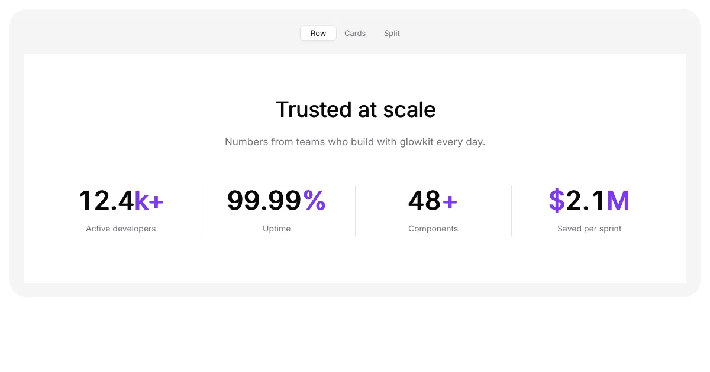

Stats Section
Key numbers that count up when scrolled into view: a divided row, icon cards, or a split heading + grid.

Usage
Add glowkit next to eframe:
cargo add glowkit eframeThen draw it inside any egui Ui:
use glowkit::prelude::*;
use glowkit::templates::{StatsSection, StatItem, StatsLayout};
StatsSection::new()
.title("Trusted at scale")
.items(vec![StatItem::new(99.99, "Uptime").suffix("%").decimals(2)])
.layout(StatsLayout::Cards)
.show(ui);Prefer to own the code? The glowkit CLI copies this component's source into your project, shadcn-style:
cargo install glowkit-cli
glowkit add stats-sectionEquivalent to
If you know this pattern from MVP Blocks, Tailark and shadcnblocks, Stats Section is the Rust version: an original egui implementation, not a port, that runs natively and in WebAssembly.
- StatsMVP Blocks
- StatsTailark
- Statsshadcnblocks
About Stats Section
Stats Section is one of 28 components in glowkit's Blocks category. It lives in the glowkit-templates crate, enabled by the templates feature of glowkit (on by default). It reads its colors from the active glowkit theme, so it matches the rest of your app in light, dark or a custom brand theme, and every color, size and timing has a setter to override it.
Ready-made sections you compose into screens: heroes, feature grids and bento layouts, pricing, testimonials, FAQs, teams, changelogs, logo clouds and device mockups.